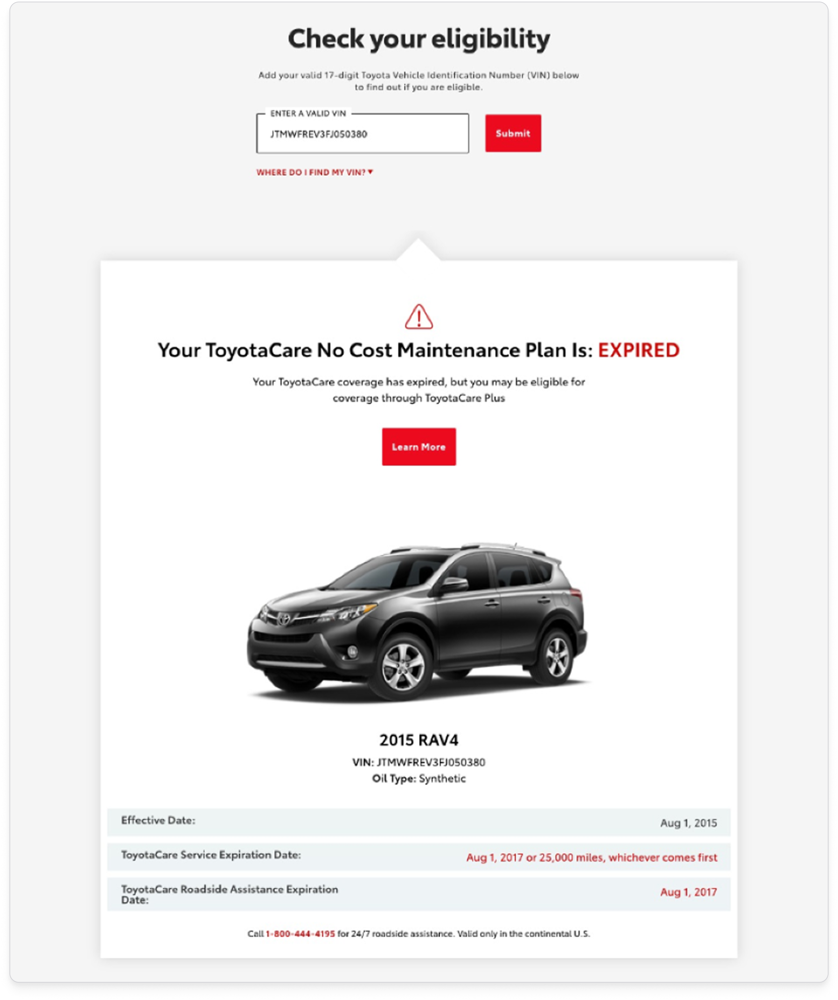
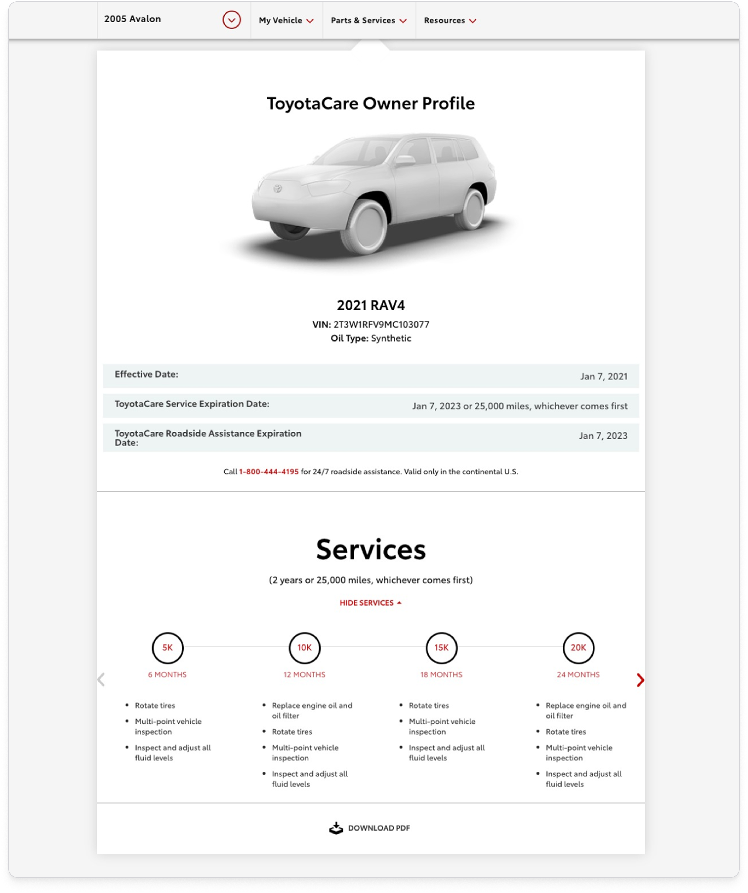
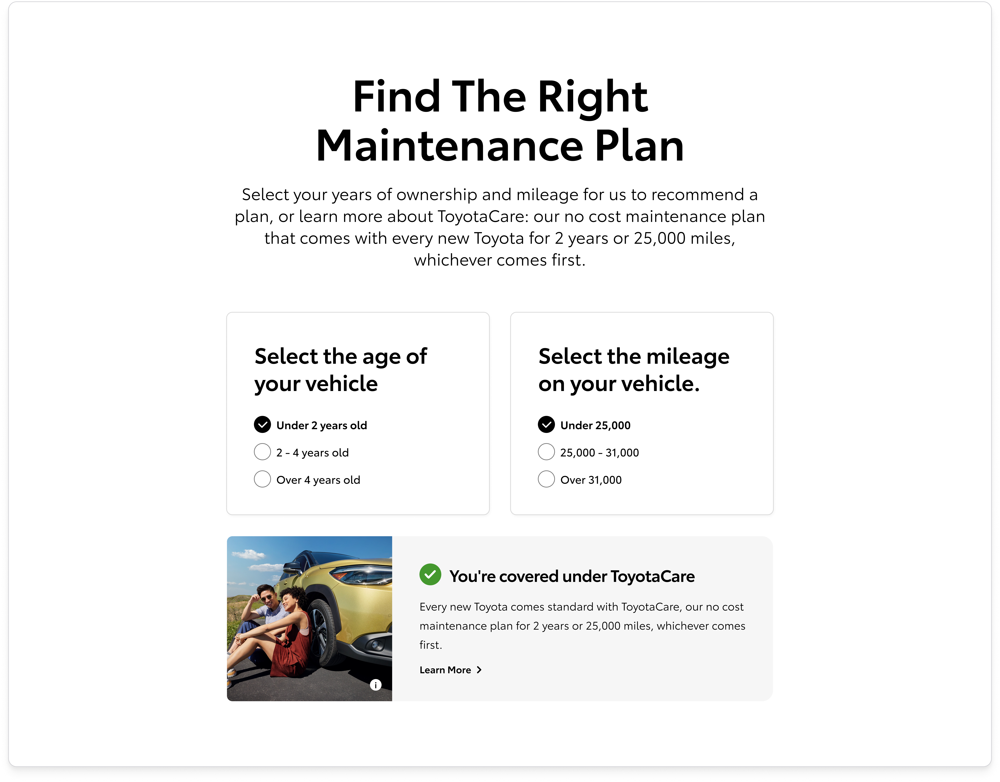
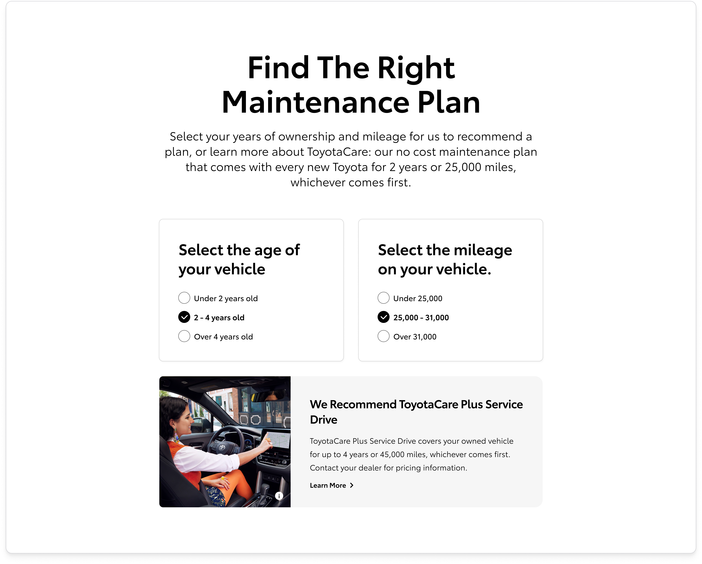
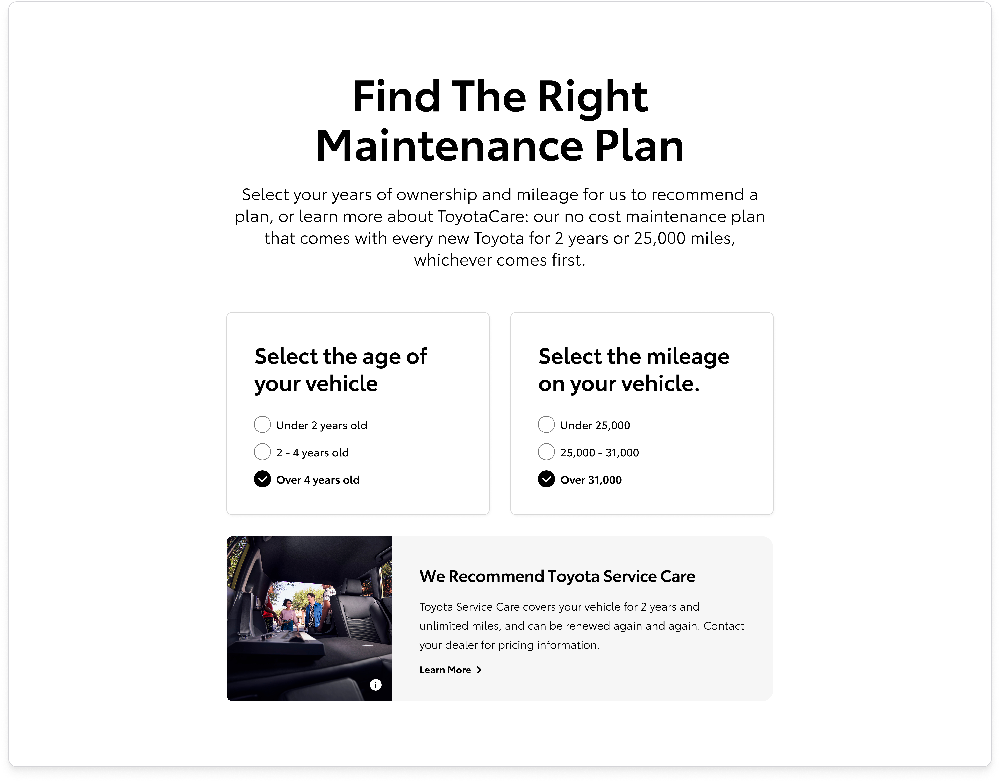

Toyota Maintenance Plans
I led the redesign of Toyota's Maintenance Plans page, consolidating a fragmented multi-page experience into a single, personalized destination for 34M+ Toyota owners that helped find the right maintenance plan for their vehicle. The redesign drove an 8% increase in conversion, measured by users who reached out to their dealer to purchase a maintenance plan.
Role
Product Designer
Client
Toyota
Agency
Saatchi & Saatchi LA
Shipped
December 2023
Context
Toyota offers a comprehensive maintenance plan suite: ToyotaCare, standard on every new vehicle; ToyotaCare Plus for extended coverage; and Toyota Service Care for flexible options. With 34M+ Toyota owners, the opportunity to help them understand, compare, and act on these plans was enormous. The existing experience was squandering it.
Plan content lived across 3 separate areas of toyota.com, a main landing page, individual plan pages, and a standalone ToyotaCare instance, each repeating the same material in slightly different ways. Users looped between them without ever reaching the answer they had arrived with.




Problem
Research surfaced two distinct user types arriving with fundamentally different needs.
Toyota shoppers were evaluating plans before a purchase decision.
Toyota owners already had a vehicle and needed to know whether they had a plan, what it covered, and whether they needed to act before it expired.
Underneath both sat a single shared problem: nobody could figure out which plan was right for them. The page presented information but never gave a recommendation. That gap, between presenting plans and actually guiding a decision, became the central design challenge.
Process
I ran a competitive audit across in-vertical and out-of-vertical brands to see how others handled complex plan comparison. Porsche led with concise, well-organized touts that started high-level and revealed detail on scroll. HubSpot, out of vertical, made cross-plan comparison effortless through scannable, organized layouts. Both pointed at the same principle: lead with clarity, reward depth. The existing Toyota experience did neither.

Final designs
The shipped experience split cleanly by who the user was.
Shoppers got a logged-out destination that consolidated everything previously spread across three pages: clean comparison cards, a prominent recommendation component, and a "learn more" modal for anyone who wanted to go deeper before contacting a dealer.
Owners got a logged-in experience personalized to their vehicle, surfacing current plan status and a recommendation tag that reflected where they were in their ownership journey. For owners whose ToyotaCare was near expiration, the page proactively surfaced next steps.

Vehicle selected — recommend ToyotaCare Plus

Vehicle selected — ToyotaCare expired






Outcome
The redesigned page drove an 8% lift in dealer outreach, Toyota's primary signal for plan purchases, at the scale of 34M+ Toyota owners. Three fragmented pages became one, but the real unlock was finally answering the question users had always been asking: “Which Toyota Care Plan is right for me?"
+8%
Lift in dealer outreach
34M+
Toyota owners reached